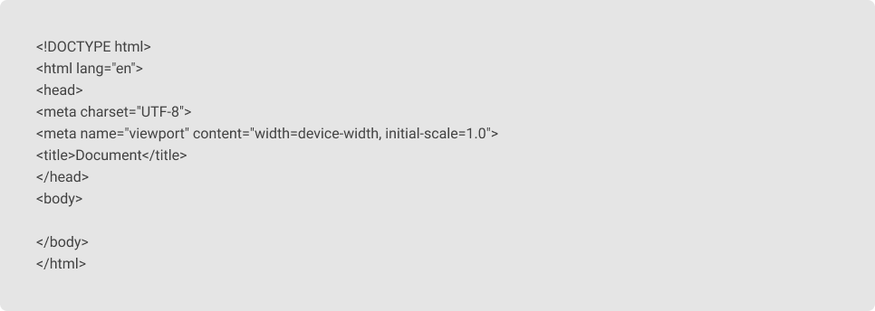
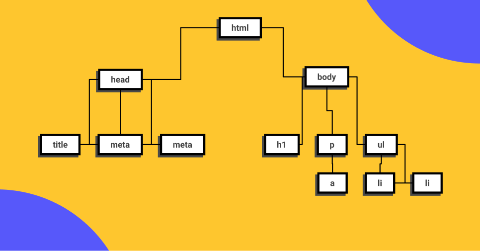

Este es el inicio de tu carrera como Desarrollador Web, empezarás aprendiendo HTML y CSS para la creación de contenidos, en el nivel 2 aprenderás de componentes y en 3 sobre layouts.
Chrome va a ser el navegador que utilizaremos en el curso por su extenso soporte de nuevos estándares y herramientas de desarrollo avanzadas y de amigable uso.
Visual Studio Code es el editor de texto más popular y potente del mercado actualmente, su fácil uso y la capacidad de extenderlo por medio de plugins lo hace el complemento perfecto para cualquier programador sin importar el lenguaje en el que se desemvuelva.
Figma es una la herramienta más popular en la actualidad para entregar diseños a los desarrolladores para su implementación por su fácil uso porque puede ser usado directamente desde el navegador.

Así como en Facebook te encuentran tus amigos, en Github te encuentran otras programadoras y programadores de todo el mundo, en vez de subir fotos de tus viajes aquí subes tu código y puedes elegir hacerlo “open source” o guardarlo de manera privada, Github será esencial para almacenar tu futuro portafolio.
Hyper Text Markup Language o Lenguaje de marcas Hipertexto. Es el componente más básico de la web. Define el significado y la estructura del contenido.
Las etiquetas HTML van a ayudarnos a brindar una estructura y semántica al contenido de nuestro website y cada una tiene características y usos diferentes aunque visualmente den un resultado similar.
Muchas etiquetas son fácil de diferencias como los headings o las imágenes y otras diferentes como header, footer, section o div, aquí es donde la semántica será la respuesta y si sabemos un poco de inglés también podremos darnos una pequeña idea de su uso pero en este curso vamos a usar las más importantes y que serán parte de tu día a día como Software Developer.
El Document Object Model es una estructura de árbol que representará todos nuestros proyectos web como si un árbol genealógico fuera: padres, hijos, hermanos con niveles infinitos. cuando entendemos esta anidación podemos identificar dependencias, herencias en css y que tan complejo es nuestro proyecto.

La semántica le brinda sentido a cada elemento existen en un sitio web, algunos elementos será meramente decorativos y no deben significar nada pero otros serán títulos y deberán estar en diferente jerarquías o alguna secciones serán más relevantes que otras, esto ayudará a los motores de búsqueda como Google o Duck Duck Go a diferenciar tu contenido, categorizar y será la herramientas más valiosa para estar en los primeros resultados de búsqueda SEO. También ayudará a la accesibilidad de tu sitio web, para que personas con habilidades diferentes puedan entender cada contenido.
Los atributos le dan características extra a las etiquetas para complementar información y son pre programadas por el navegador, algunos atributos funcionan en todas las etiquetas de la misma forma como ‘class’ pero otros atributos funcionan en solo alguna etiquetas como src
Hojas de Estilo en Cascada (del inglés Cascading Style Sheets) o CSS es el lenguaje de estilos utilizado para describir la presentación de documentos HTML